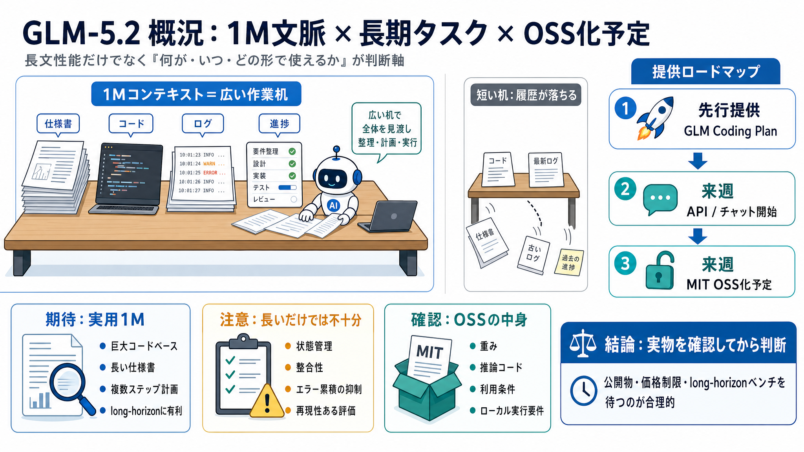

主な焦点
1Mコンテキスト / long-horizon（エージェント的作業）

長文×長期タスク、段階公開
Z.aiのコーディング向けモデル「GLM-5.2」が、1Mコンテキスト級を訴求しつつ、来週API/チャットとMIT OSS化を予定する——という話題を整理します。
“オープン”の中身が不明
開発者にとって本当に重要なのは、長文性能だけでなく「何が、いつ、どの形で」手元で使えるかです。
コンテキスト＝記憶
コンテキストウィンドウ（文脈幅）は、モデルが同時に参照できる“作業机の面積”に近い指標です。面積が広いほど、仕様・設計・ログをまとめて保持しやすくなります。
段階公開の設計
投稿では、提供→統合→OSS公開の順に進むロードマップが示されています。
訴求点は“実用1M”
GLM-5.2の中心的アピールは「約100万トークン級のコンテキストウィンドウを“実用レベル”でサポート」する点です。
“長い”だけでは足りない
long-horizon（長期タスク）は、コンテキスト量だけで決まりません。状態管理や整合性、エラー累積の抑制も重要です。
OSS＝自由の前提条件
MITライセンスは一般に利用・改変・再配布の自由度が高いです。一方で、OSS化の“中身”が重みなのかコード中心なのか等は別論点になります。
期待と不満のズレ
OSS公開の具体日が不明だと、社内検証やセキュリティレビュー、パイプライン入れ替えが遅れます。
技術×運用×法務
今回の情報を意思決定に使うなら、最低限次の“確認項目”で整理すると安全です。
コメント欄の温度感
技術評価だけでなく、供給網・規制・事業モデルへの警戒が絡みやすい話題になっています。
私見：待つのが合理的
長期タスクと1M級という方向性は魅力的ですが、「何が公開され、どこまで試せるか」が不確定です。
次に読むべき情報
OSS公開（MIT）の実物と、long-horizonの定量データが出てから判断すると、期待過多と計画破綻を避けられます。
No references found